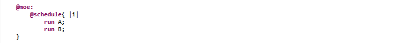
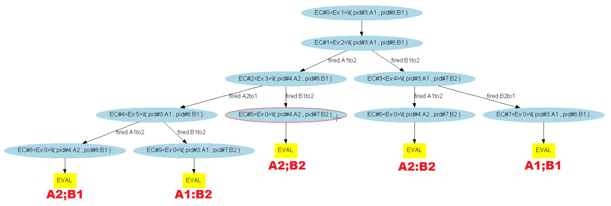
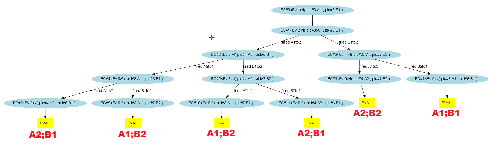
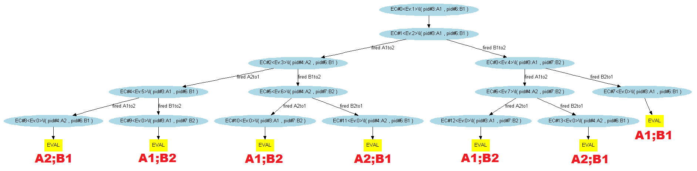

Both processes are sequentially evaluated, considering every possibility: here P followed by Q and Q followed by P. Warning: this operator easily leads to an explosion of the number of execution paths.
Considering 2 processes : P and Q, with interlacing, both process are evaluated sequentially while preserving the exhaustivity of the possible cases. It means at each iteration (i.e. from each context), Diversity will explore both :
This method can entail combinatorial explosion on the number of execution paths.
Applying this on our most basic example, the "@moe:" section looks like :
And exploring the different paths with the symbolic engine (5, 6 and 7 evaluation steps) gives us :
  